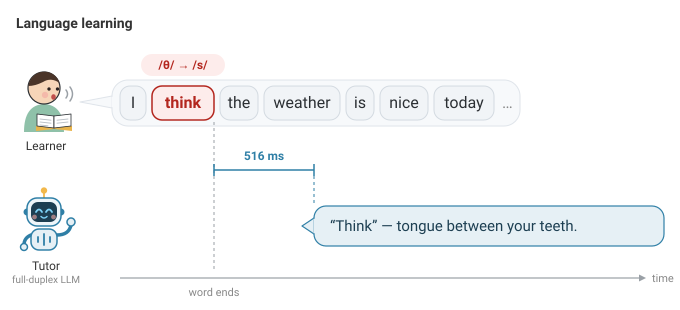
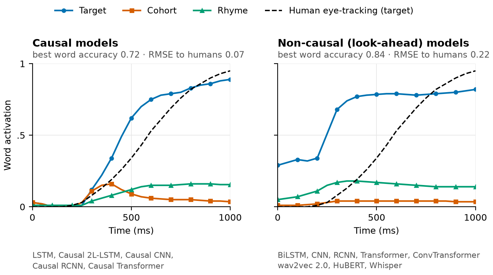

Aiming to build Her.
I'm a PhD student in Language & Cognition at the University of Connecticut, working with James S. Magnuson. I approach human-level speech intelligence from the human side: I build computational models of how people perceive and understand speech as it unfolds, and use them to measure and improve how machines listen. Before my PhD, I was a senior machine learning engineer on the speech team at NetEase in China. Some human behaviors I keep coming back to: , , , and .
I'm looking for summer 2027 research internships in speech LLMs, informed by cognitive science.
Visual summaries of my studies:
Full-Duplex Speech Models Take the Floor When Asked, Not When Needed, arXiv 2026, under review
L. Peng, B. Nuchged, K. Fu, Y. Yao


Full-duplex speech models need to actively offer help to users, which matters for home assistants, tutoring, and virtual interviews. However, today's models almost never speak up when needed. They answer questions and talk after pauses, but a hazard or a false claim draws no more speech than an ordinary sentence.
Listen, Diagnose, and Interrupt: Coupling Mispronunciation Diagnostics into a Full-Duplex Speech LLM, preprint 2026, under review
L. Peng, B. Nuchged, K. Fu, Y. Yao, J. Zhang


This full-duplex language-learning tutor feeds a WavLM detector's mispronunciation diagnosis into a frozen 11B full-duplex model (VoiceChat) through a zero-initialized residual channel. It keeps the detector's accuracy, with sentence-level F1 nearly unchanged, and works in full-duplex mode: the correction starts a median 516 ms after the mispronounced word, while the learner is still talking.
Beyond the Transcript: Measuring and Improving the Use of Acoustic Information in Audio Language Models, preprint 2026, under review
L. Peng, B. Nuchged, Y. Yao


Do Machines Listen Like Humans? A Temporal Benchmark for Phonological Competition in End-to-End ASR, Interspeech 2026
L. Peng, C. Brodbeck, S. Luthra, K. Brown, J. Rueckl, M. Escabí, D. Gow, J. S. Magnuson


🧠 Causality shapes a model's cognitive dynamics and lays the groundwork for real-time spoken interaction.
A Study on Fine-Tuning wav2vec2.0 Model for the Task of Mispronunciation Detection and Diagnosis, Interspeech 2021
L. Peng, K. Fu, B. Lin, D. Ke, J. Zhang
Fine-tuning wav2vec 2.0 reaches 60.44% F1 on L2-ARCTIC, and 55.52% with 3× less labelled data.
All publications on Google Scholar
Experience:
- University of Connecticut, PhD student, Language & Cognition, 2024–now
- NetEase (Youdao), Senior Machine Learning Engineer, Speech, 2022–2024 · real-time and on-device speech systems for language learning, serving millions of users
- ByteDance AI Lab, Research Intern, Speech, 2020–2021 · ASR modeling for pronunciation scoring
- Beijing Language and Culture University, M.S., speech lab, 2019–2022
- South China Normal University, B.S. Physics, 2015–2019
Honors & Service:
- Shankweiler Fellow, Donald Shankweiler Language Sciences Award, CNC-CT program, University of Connecticut
- Outstanding Graduation Dissertation Award, Beijing Language and Culture University, 2022
- Reviewer, ICASSP 2025, 2026, 2027